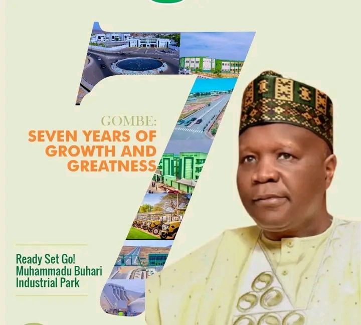
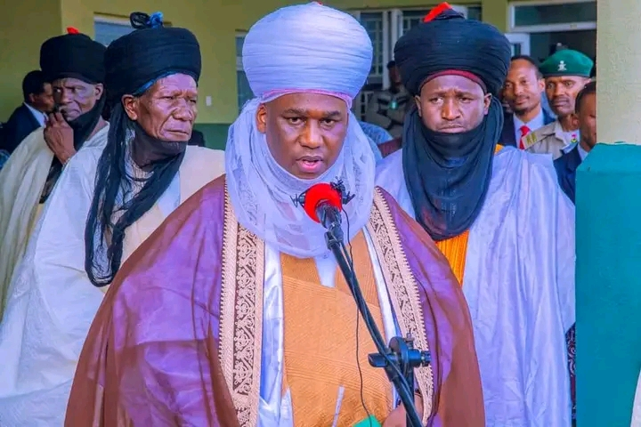

Latest updates from the ministry
Latest government announcements and press releases

Muhammad Inuwa Yahaya is the Governor of Gombe State, serving since 2019 and re-elected in 2023. He is focused on improving infrastructure, healthcare, education, and economic development in the state.

Alhaji Abubakar Shehu Abubakar III is the current Emir of Gombe, who ascended the throne in 2014 as the 11th ruler of the Gombe Emirate.